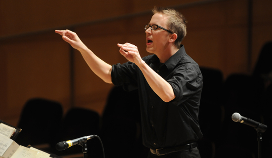

CONDUCTING

The School of Music’s conducting program offers specialized training to a select group of advanced masters and doctoral students to develop skill as conductors for choral or instrumental ensembles at a professional level.
In addition to conducting lessons and mentoring, students take a full sequence of advanced coursework including ensemble literature, programming, music theory, music history, performance practice, choral diction or instrumental techniques, and pedagogy.
This tailored course of study provides our students with the depth of knowledge necessary for a professional career as a conductor or a university-level instructor.
With three orchestras, three large choirs and two symphonic bands, in addition to numerous smaller performing ensembles, conducting students are assured ample podium time, serving as assistant or apprentice conductors for major performances in some cases. With a professional orchestra, opera company and choirs close at hand in Salt Lake City, students have frequent opportunities to attend local rehearsals and concerts in a musically-rich community.